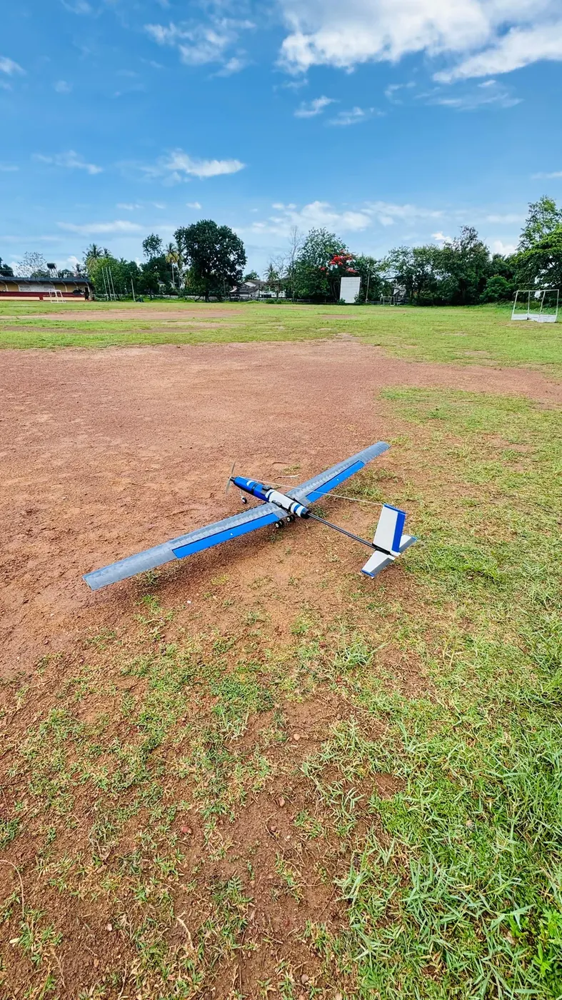
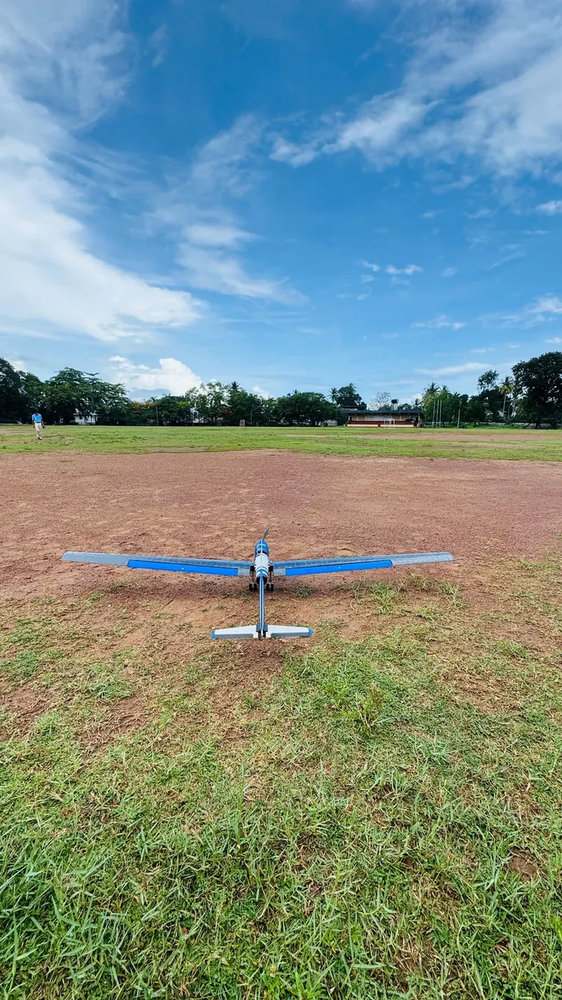
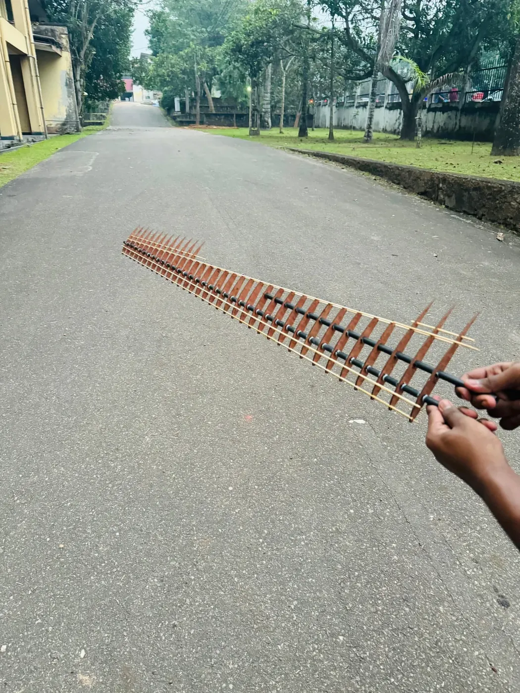
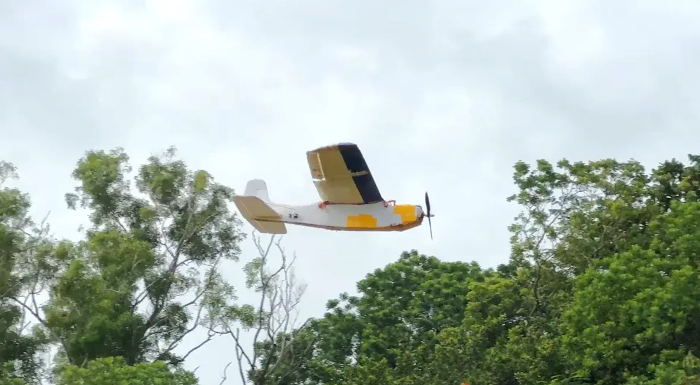
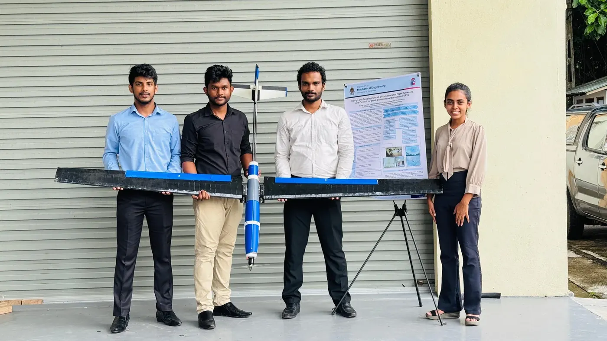
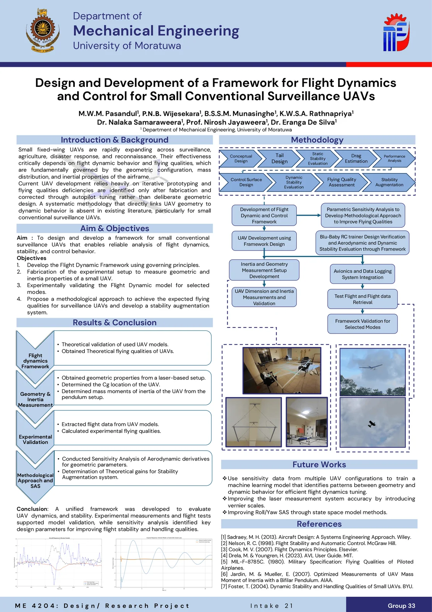

Flight-Dynamics Analysis and Fine-Tuning of a Fixed-Wing UAV
Department of Mechanical Engineering · University of Moratuwa
This project established a complete workflow for connecting UAV geometric design with its actual flight-dynamic behaviour — from a parametric sensitivity analysis of the five dynamic modes, through the fabrication and instrumentation of a fixed-wing UAV, to experimental modal identification from recorded flight data.






Overall Project Workflow
First, a parametric sensitivity analysis was conducted to determine how changes in major geometric and mass-related parameters influence the short-period, phugoid, Dutch-roll, roll-subsidence, and spiral modes. Based on the developed numerical framework, a fixed-wing UAV was then fabricated and equipped with an APM 2.8 flight controller to provide control, stabilisation, navigation, and initial flight-data recording capabilities.
During flight testing, several practical limitations were identified in both the fabricated aircraft and the original data-acquisition method. An independent Arduino-based data-acquisition system was therefore developed using an IMU, Kalman filtering, SD-card storage, and an input-identification mechanism. After difficulties were encountered while obtaining reliable modal responses from the first fabricated UAV, a stable Blu-Baby RC aircraft was used as an additional validation platform. The recorded pitch-angle and pitch-rate responses were pre-processed and analysed using FFT and Prony’s method to estimate the experimental dynamic-mode characteristics and compare them with the numerical predictions.
Chapter 1 — Parametric Sensitivity Analysis
Purpose
The sensitivity analysis was conducted to identify how changes in the geometric and mass-related properties of a small fixed-wing UAV affect its dynamic behaviour, and to determine which design parameters could be adjusted during preliminary design to improve inherent stability and flying qualities.
This approach supports passive stabilisation, in which desirable dynamic characteristics are achieved through airframe geometry, aerodynamic configuration, centre-of-gravity location, and mass distribution. Compared with active stabilisation — which depends on continuous sensor feedback, actuator corrections, and complex control algorithms — passive stabilisation can be more energy-efficient, lower onboard computational demand, reduce repeated control-surface movements, and improve reliability when sensor data or control-system performance is limited. Active stabilisation may still be required for precise control, disturbance rejection, or autonomous operation, but designing satisfactory inherent stability first reduces the workload placed on the flight controller.
Baseline Configuration and Parameters
A baseline UAV configuration was established using the developed Python-based flight-dynamics framework, covering main-wing geometry, horizontal- and vertical-tail geometry, fuselage dimensions, control-surface geometry, aircraft mass, centre-of-gravity position, moments of inertia, and the cruise velocity and operating condition. Selected parameters were then varied individually while the others were held as consistent as possible. Because aircraft geometric parameters are interconnected — changing wing aspect ratio alters span and chord, and changing tail-volume ratio affects tail area or tail arm — the complete geometry and associated aerodynamic properties were recalculated for every modified configuration.
- Main wing aspect ratio, sweep angle, dihedral angle, and aerofoil
- Horizontal tail volume ratio, sweep angle, and lift-curve slope
- Vertical tail volume ratio and lift-curve slope
- Centre of gravity position
- Pitch, roll, and yaw moments of inertia
- Cruise velocity
Automated Procedure
For each modified configuration the framework automatically updated the affected geometry, generated the required AVL geometry and input files, executed AVL through the Python environment, extracted aerodynamic stability derivatives and eigenvalues, identified the corresponding dynamic modes, calculated natural frequencies, damping ratios, or time constants, and stored the results for comparison against the baseline aircraft. This allowed many geometric configurations to be evaluated without manually preparing separate AVL models, and ensured the same calculation procedure was applied consistently throughout.
Because the parameters had different units and numerical ranges, normalised sensitivity — the percentage change in a dynamic characteristic caused by a one-percent change in a design parameter — was used to compare their relative influence. Regression analysis estimated the coefficient where trends were approximately consistent; where the response was nonlinear, the complete trend was considered rather than a single value.
Sensitivity Results by Mode
Short-Period Mode
The short-period response was strongly influenced by horizontal tail design, static margin, centre of gravity position, and pitch moment of inertia. Horizontal tail volume ratio produced the clearest and most predictable effect: a 1% increase produced approximately a 1.03% increase in short-period natural frequency and approximately a 0.68% increase in short-period damping ratio. Moving the centre of gravity changed the static margin and therefore modified both frequency and damping, while a lower pitch inertia produced a faster response and higher natural frequency — though changing inertia required rearranging onboard components and had to be considered together with the centre of gravity. Main wing and horizontal tail sweep also affected the short-period characteristics, more nonlinearly, because they modified several aerodynamic properties at once.
Phugoid Mode
The phugoid response was affected mainly by wing geometry, aerodynamic efficiency, cruise velocity, drag characteristics, and the overall longitudinal configuration. Increasing wing aspect ratio from approximately 7 to 9 increased the calculated phugoid frequency, with a 1% increase in aspect ratio producing approximately a 0.2429% increase in phugoid natural frequency. Phugoid damping was less linear, because changing aspect ratio also affected induced drag, lift-to-drag ratio, wing geometry, and the aerodynamic derivatives associated with aircraft speed — so phugoid tuning could not be based on aspect ratio alone.
Dutch-Roll Mode
The Dutch-roll response was mainly affected by vertical tail design, wing sweep, wing dihedral, and yaw-related inertia properties. Increasing the vertical tail contribution changed both the directional restoring tendency and yaw damping, though not consistently linearly across the full range. Wing sweep and dihedral changed the coupling between rolling and yawing motion, so vertical tail volume, sweep, and dihedral had to be evaluated together rather than adjusted independently — improving one lateral characteristic could degrade another.
Roll-Subsidence Mode
Roll subsidence was influenced mainly by roll moment of inertia, wingspan, aspect ratio, sweep angle, and aerodynamic roll damping. Increasing mass located far from the aircraft centreline increased roll inertia and slowed the roll response, while reducing it allowed the aircraft to settle more rapidly after a rolling disturbance. Wing geometry also modified aerodynamic roll damping, but the trends were not always linear, so tuning required considering both external wing geometry and internal component arrangement.
Spiral Mode
Wing dihedral was the most influential parameter for the spiral mode. Increasing the dihedral angle from approximately 0° to 8° reduced the spiral-mode time constant from approximately 40.2 seconds to 3.0 seconds — a reduction greater than 92% — demonstrating that relatively small dihedral changes produce a significant change in spiral response. Excessive dihedral, however, also affects Dutch-roll behaviour and roll-control performance, so the final angle had to be selected by considering the combined lateral-directional response.
Proposed Fine-Tuning Approach
Based on these results, a systematic sequence was proposed: adjust the short-period characteristics first using horizontal-tail volume ratio, centre of gravity position, horizontal tail effectiveness, and pitch moment of inertia; then consider spiral and Dutch-roll characteristics together using wing dihedral, vertical tail volume ratio, wing sweep, and directional-stability parameters; then refine roll subsidence using roll moment of inertia, wing geometry, and internal mass distribution; and finally adjust the phugoid response using wing aspect ratio, tail aerodynamic efficiency, cruise velocity, and the overall longitudinal configuration. Modifying the most influential parameters first reduces unwanted changes to the other dynamic modes.
Chapter 2 — UAV Fabrication and APM 2.8 Integration
Airframe
A physical fixed-wing UAV was fabricated to support experimental flight testing and validate the dynamic behaviour predicted by the framework, designed as a lightweight conventional aircraft with sufficient structural strength and internal space for the propulsion system, flight controller, receiver, sensors, battery, and data-acquisition equipment.
The UAV had an approximately 2.5 m wingspan. The wing structure used hollow carbon-fibre tubes as main spars and laser-cut plywood ribs to maintain the aerofoil profile, with a fabrication jig controlling rib spacing and alignment and heat-shrink film producing a lightweight aerodynamic surface. The central wing box was manufactured from welded aluminium members and acted as the main structural connection between the wings, fuselage, landing gear, propulsion system, and tail booms, while the fuselage pod was 3D printed at low infill to reduce weight while maintaining stiffness.
Twin carbon-fibre tubes served as tail booms supporting the horizontal and vertical tail surfaces. The elevator and rudder servos were positioned closer to the fuselage with control inputs transmitted through push rods, reducing the mass located far behind the centre of gravity and limiting the pitch moment of inertia. Battery and payload positions were made adjustable so the centre of gravity could be corrected before flight.
Flight Controller and Pre-Flight Testing
The APM 2.8 was installed close to the centre of gravity and configured using ArduPilot fixed-wing firmware through Mission Planner, connected to the receiver, electronic speed controller, aileron, elevator and rudder servos, GPS module, and power system. Assisted modes were used during initial flight testing, take-off, and recovery, while manual mode was selected during dynamic-response testing so the flight controller would not significantly modify the aircraft’s natural response. The APM recorded pitch, roll, yaw, angular rates, accelerations, GPS position, altitude, and ground speed.
Before flight, control-surface directions, servo operation, motor response, radio range, centre of gravity position, structural connections, sensor calibration, and APM flight modes were checked, and taxi and low-speed tests confirmed directional control and propulsion performance.
Chapter 3 — Data Acquisition, Flight Testing, and Validation
Limitations of the Initial Method
The APM 2.8 was initially used to record the UAV’s flight response, but its effective sampling rate and onboard memory were insufficient for reliably capturing rapid short-period oscillations, and a considerable portion of the available recording time was consumed by take-off, trimming, and positioning before the test manoeuvres.
Arduino-Based Data-Acquisition System
An independent system was developed using an Arduino Nano, an IMU, and an SD-card module, recording pitch angle, pitch rate, time, and input-marker information in CSV format at a higher sampling rate than the APM. A Kalman filter combined accelerometer and gyroscope measurements, reducing accelerometer noise and gyroscope drift while preserving the rapid pitch response required for modal analysis. A toggle switch connected through an auxiliary radio channel marked the beginning of each elevator-doublet manoeuvre, making the exact response region easy to extract during post-processing.
Difficulties with the Fabricated UAV
- Roll-related instability requiring frequent corrective pilot inputs
- Limited flying area and take-off distance, reducing time to establish a trimmed condition
- Structural vibration affecting the IMU measurements
- Control-surface backlash and servo delay
- Wind disturbances and variation in flight speed
- Damage and repairs during repeated test attempts
- Difficulty obtaining a sufficiently long undisturbed response
Because of these conditions the measured response contained both the aircraft’s natural motion and corrective pilot inputs, reducing the reliability of the modal-identification results.
Validation Using the Blu-Baby Aircraft
A Blu-Baby RC aircraft was selected as a secondary validation platform because of its more stable and predictable flight behaviour. Its geometry, mass properties, centre of gravity position, and operating condition were entered into the numerical framework, and the same Arduino data-acquisition system, IMU, Kalman filter, SD-card recording, and toggle-switch marking method were installed so the experimental procedure remained consistent. During testing the aircraft was brought to an approximately steady flight condition before an elevator doublet was applied, and the resulting pitch-angle and pitch-rate responses were recorded.
Pre-Processing and Modal Identification
After each flight the Arduino CSV files and APM logs were transferred for analysis, with the recorded toggle-switch signal used to identify each doublet manoeuvre. The selected data were processed by extracting the doublet response region, removing the initial steady-state offset, checking sampling interval and data continuity, removing corrupted or unsuitable measurements, separating repeated manoeuvres, and preparing the pitch-angle and pitch-rate signals for modal analysis. Careful time-window selection was necessary: too short a window excluded useful response data, while too long a window admitted gusts, turns, or pilot corrections.
The Fast Fourier Transform identified the dominant frequency in the measured pitch response and allowed repeated flight tests to be compared, but because the recorded response was a short decaying transient, FFT gave limited frequency resolution and could not directly determine damping. Prony’s method was therefore used to estimate both frequency and damping ratio, with a second-order Prony model applied to the pitch-angle and pitch-rate data to identify the dominant short-period pole pair. The pitch-rate signal was selected as the main validation signal because it represented the rapid rotational motion of the short-period mode more clearly than pitch angle.
Comparison with the Numerical Model
The experimentally identified short-period frequency and damping ratio were compared with the values predicted by the numerical framework. Some differences were observed because the numerical model assumed a rigid aircraft operating near a steady trimmed condition, while the real aircraft was affected by structural flexibility, pilot correction, servo dynamics, sensor noise, manufacturing deviations, propeller slipstream, and uncertainty in the inertia and centre of gravity values. The short-period response was successfully identified from the Blu-Baby flight data; the slower phugoid mode could not be reliably extracted, as it required a longer undisturbed flight period.
Outcome
The sensitivity analysis established a direct connection between UAV design parameters and dynamic-mode characteristics. Horizontal tail volume ratio was identified as an effective parameter for short-period tuning, wing dihedral had the strongest influence on the spiral mode, wing aspect ratio affected the phugoid frequency, and the vertical tail configuration influenced the Dutch-roll response. The results demonstrated that UAV dynamic behaviour can be improved through systematic geometric modification before relying on stability-augmentation systems or repeated physical prototypes.
The final workflow combined IMU measurement, Kalman filtering, toggle-switch input identification, data-window extraction, FFT analysis, and Prony-based modal identification, enabling the experimental short-period response to be compared against the predictions of the developed flight-dynamics framework.